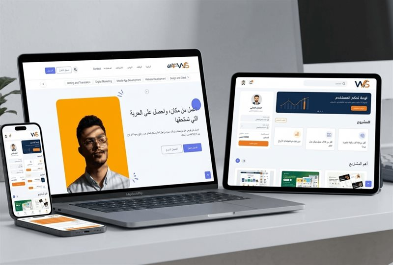

منصة ويب
منصة صوركم الرقمية
منصة متخصصة لإدارة ومشاركة الصور بخصوصية عالية، تربط المصورين والعملاء بنظام وصول آمن.
شاهدها ضمن الأعمالنحوّل فكرتك إلى تجربة رقمية واضحة تجمع بين التصميم، البرمجة والتنفيذ العملي؛ من الموقع والمتجر إلى التطبيق والهوية الرقمية.
بدل قائمة طويلة من البطاقات المتشابهة، نظمنا الخدمات حسب نوع الاحتياج حتى تصل بسرعة للمسار المناسب.
نماذج فعلية من بيانات معرض الأعمال الحالي، بدون أرقام أو نتائج تسويقية غير مثبتة.
منصة متخصصة لإدارة ومشاركة الصور بخصوصية عالية، تربط المصورين والعملاء بنظام وصول آمن.
شاهدها ضمن الأعمال
منصة عربية تعمل كوسيط بين مقدمي الخدمات والعملاء مع نظام محادثات ودفع متكامل.
استكشف معرض الأعمال
نظام لإدارة وتتبع مستخدمي شبكات الواي فاي وتوليد الكروت وإدارة الجلسات برمجياً.
عرض مزيد من المشاريعنحدد الهدف، الجمهور، وما الذي يحتاجه المشروع فعلاً.
نبني التجربة والحل التقني مع مراجعات واضحة أثناء العمل.
نراجع النسخة النهائية ونجهزها للعمل ونساند مرحلة الإطلاق.
إجابات مباشرة على الأسئلة الموجودة فعليًا في محتوى الخدمات.
نعم، المواقع التي ننفذها تُبنى بتجربة متجاوبة مع الجوال والتابلت والكمبيوتر.
نعم، يمكن إضافة لوحة تحكم لإدارة المحتوى حسب طبيعة المشروع واحتياجه.
نعم، يمكن المساعدة في اختيار وربط الدومين والاستضافة المناسبة للمشروع.
تعتمد المدة على حجم المشروع ومتطلباته، ويتم تحديدها بعد فهم النطاق المطلوب.
أرسل لنا نوع المشروع واحتياجك الأساسي، ونبدأ من نقطة واضحة بدل محادثة عامة.